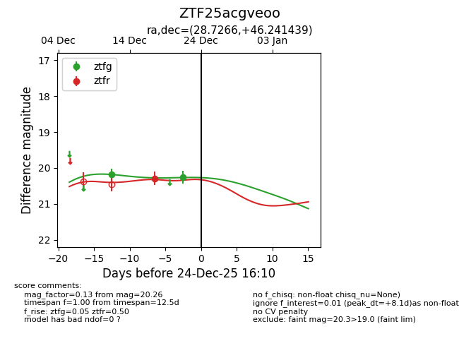
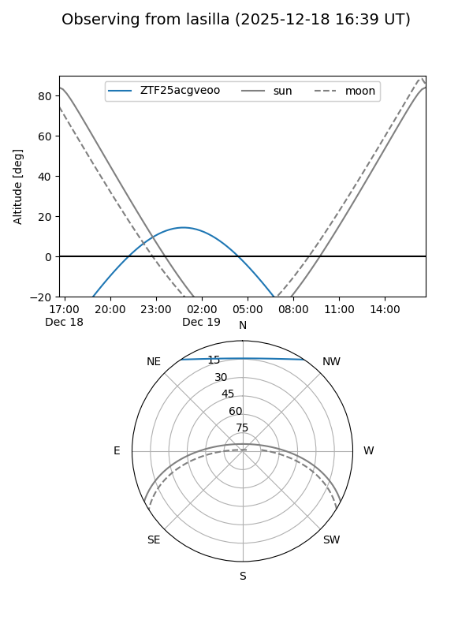
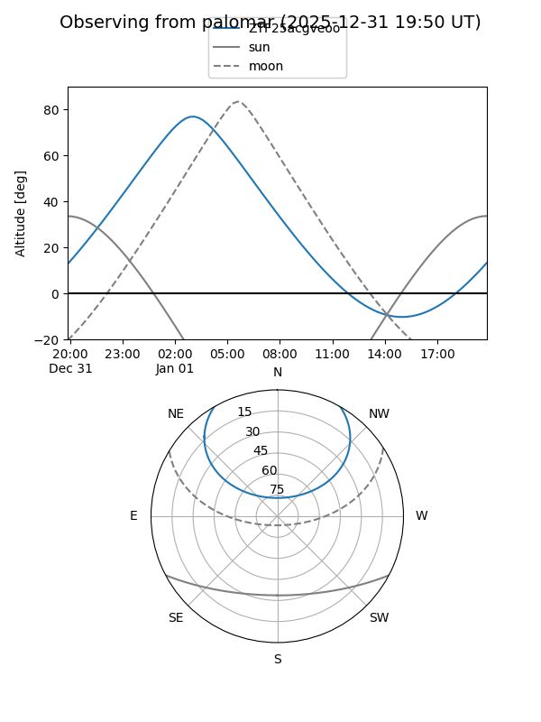
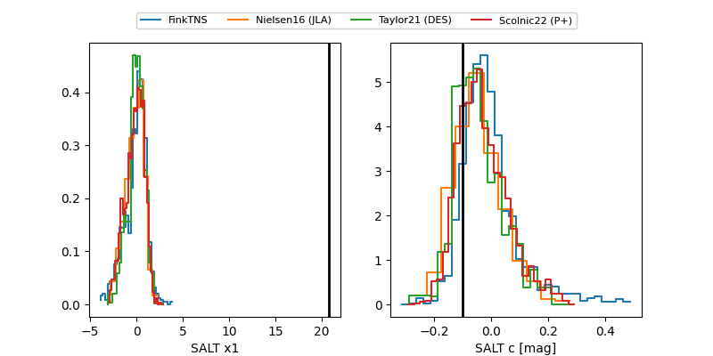

ZTF25acgveoo
Target ZTF25acgveoo at 2025-12-18 11:32
Aliases and brokers:
FINK: fink-portal.org/ZTF25acgveoo
Lasair: lasair-ztf.lsst.ac.uk/objects/ZTF25acgveoo
ALeRCE: alerce.online/object/ZTF25acgveoo
alt names
ZTF25acgveoo (ztf,fink_ztf)
Coordinates:
equatorial (ra, dec) = 28.7266,+46.24144
equatorial (HMS+DMS) = 01:54:54.38,+46:14:29.18
galactic (l, b) = (134.2339,-15.23285)
Photometry
last ztfg=20.18, ztfr=20.29
1 ztfg, 1 ztfr detections
Lightcurve

Visibility


Additional plots
